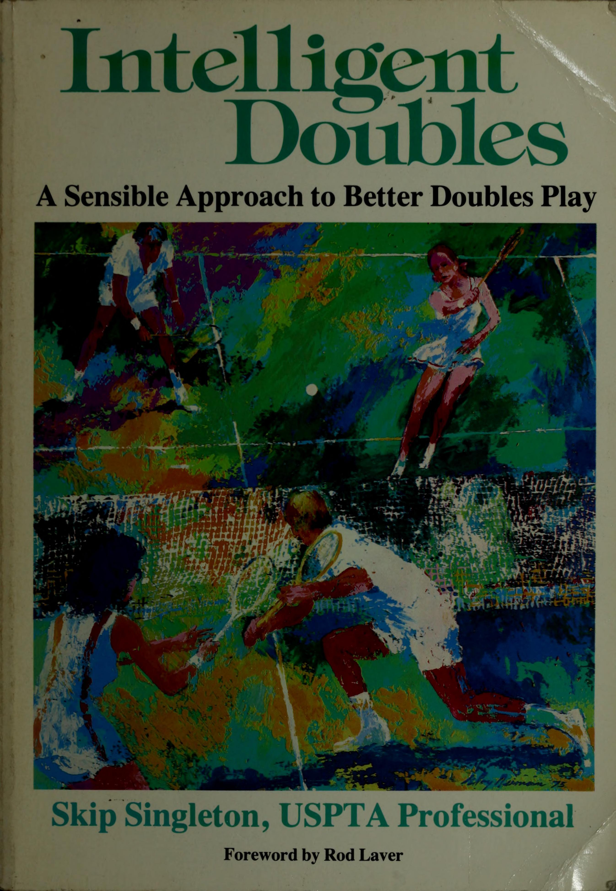
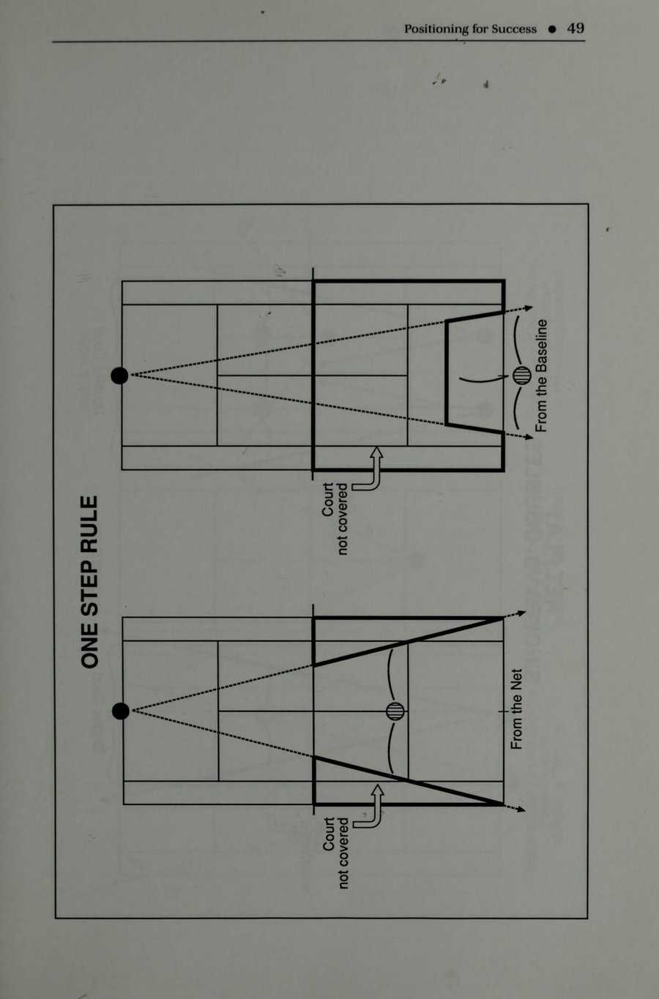
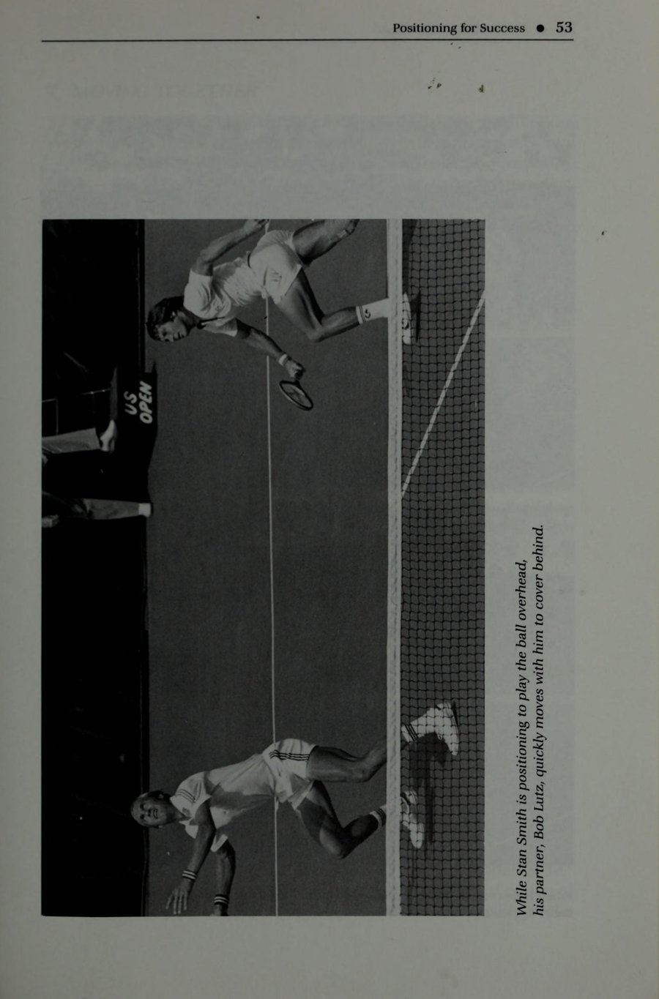
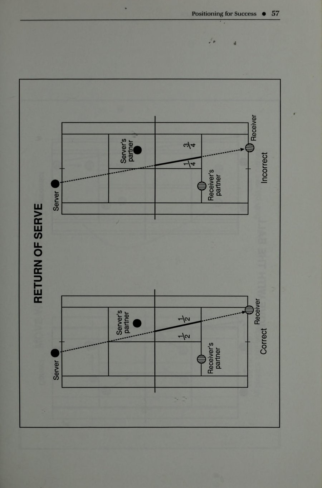
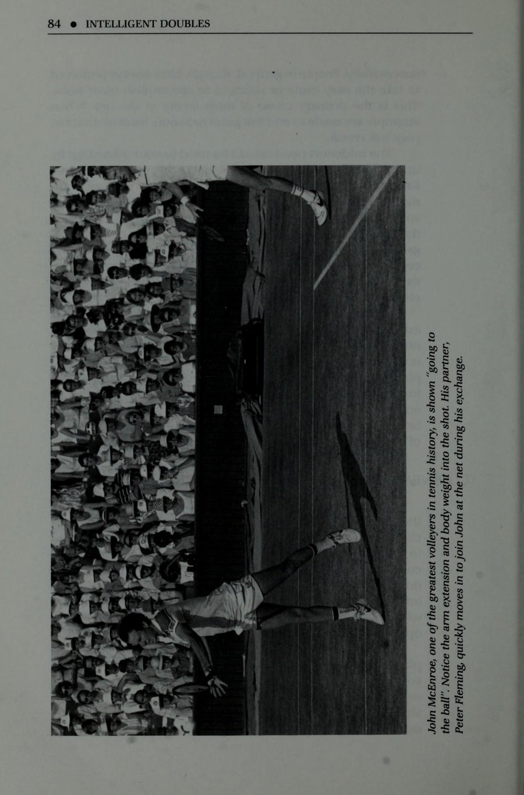
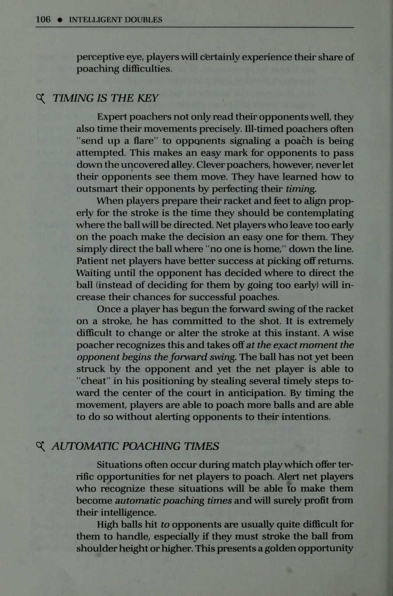

Cẩm nang chiến thuật đánh đôi kinh điển của chuyên gia Skip Singleton với lời tựa của huyền thoại Rod Laver
Lời Tựa Của Huyền Thoại Rod Laver
Intelligent Doubles mang đến một cách tiếp cận hết sức thẳng thắn, thực tế và sâu sắc để nâng tầm trình độ đánh đôi của bạn. Tác phẩm cung cấp những góc nhìn tuyệt vời và vô số lời khuyên thực chiến quý báu giúp người chơi ở mọi cấp độ — từ phong trào giao lưu đến thi đấu tranh cúp đỉnh cao — tìm thấy niềm hứng khởi trọn vẹn trên sân đấu.
Hầu hết các tay vợt phong trào đều yêu thích nội dung đánh đôi nhưng lại chưa dành đủ thời gian tập luyện để đạt được tính ổn định cần thiết. Để chơi tốt nội dung này đòi hỏi bạn phải có khả năng kiểm soát bóng xuất sắc, phản xạ bắt lưới nhạy bén và trên hết là một tư duy chiến thuật thấu đáo. Tác giả Skip Singleton đã làm sáng tỏ những nguyên lý này một cách vô cùng sinh động, dễ hiểu và truyền cảm hứng mạnh mẽ.
Nhận Định Của Huyền Thoại Evonne Goolagong-Cawley
"Skip đã nắm bắt trọn vẹn mọi nguyên lý nền tảng của môn quần vợt đánh đôi — một bộ môn vừa đầy thử thách vừa tràn ngập niềm vui mà tôi đã gắn bó suốt sự nghiệp thi đấu. Sau khi đọc cuốn sách này, tôi tin chắc bạn sẽ biết cách khai thác tối đa tiềm năng bản thân trên sân đôi. Tôi thực sự yêu thích từng chương sách!"
— Evonne Goolagong-Cawley, chủ nhân 92 danh hiệu quốc tế, 14 danh hiệu Grand Slam.
Chương 1: Sự Khác Biệt Của Đánh Đôi (The Doubles Difference)
1. Đánh Đôi: Hình Thái Nghệ Thuật Của Quần Vợt
Huyền thoại Bill Talbert từng khẳng định một câu nói bất hủ: "Đánh đôi thực sự là một môn thể thao tuyệt vời hơn đánh đơn hay bất kỳ bộ môn thể thao nào khác mà bạn có thể kể tên". Đánh đôi thường được xưng tụng là "hình thái nghệ thuật" của quần vợt bởi sự hòa quyện đỉnh cao giữa sự nhanh nhạy cơ thể, tính toán hình học không gian và sự kết nối tinh tế giữa con người với con người.
Vậy điều gì đã tạo nên sức hút mãnh liệt khiến đông đảo tay vợt từ nghiệp dư đến chuyên nghiệp say mê đánh đôi?
- Tính giao lưu và kết nối xã hội: Trong khi đánh đơn mang tính đối đầu cô độc và căng thẳng, đánh đôi là một hoạt động tập thể nơi bốn người cùng chia sẻ tiếng cười, những pha bóng ngoạn mục và những câu chuyện thú vị sau giờ thi đấu.
- Sự bền bỉ theo năm tháng: Đánh đôi đòi hỏi quãng đường di chuyển ngắn hơn đánh đơn, dựa vào vị trí đứng và phản xạ đón đầu thay vì sự bứt tốc cơ bắp thuần túy. Nhờ đó, bạn có thể tiếp tục thi đấu và thăng hoa trên sân đôi cho đến tuổi 60, 70 hay thậm chí 80 tuổi.
- Chiều sâu chiến thuật vô tận: Mỗi pha bóng trên sân đôi là một bài toán phối hợp biến hóa khôn lường giữa bốn khối óc đang vận hành cùng lúc.
2. Bản Chất: Ván Cờ Thế Tốc Độ Cao
Một quan niệm sai lầm kinh điển là coi đánh đôi như hai trận đánh đơn thu nhỏ diễn ra song song trên cùng một sân. Trong đánh đơn, bạn có thể ung dung đứng sau vạch cuối sân để kiên nhẫn bạt bóng qua lại 20 lần nhằm vắt kiệt thể lực đối phương. Nhưng trong đánh đôi, sự hiện diện của hai tay vợt đứng lưới đối phương sẽ lập tức trừng phạt bất kỳ đường bóng nào thiếu sắc sảo.
Đánh đôi là môn thể thao của cự ly gần, của những góc đánh chéo sân hiểm hóc, những cú bắt volley chúc xuống dưới chân và những pha di chuyển bọc lót đồng bộ. Để chiến thắng, bạn không cần phải là người chạy nhanh nhất hay đập bóng mạnh nhất, bạn phải là người biết tư duy thông minh hơn.
Chương 2: Phát Triển Thành Một Đội Toàn Diện (Developing as a Team)
1. "Hiểu Rõ Bản Thân Và Hiểu Rõ Bạn Cặp" (Know Thyselves)
Bí quyết đầu tiên để xây dựng một cặp đôi bất khả chiến bại bắt đầu từ việc thấu hiểu sâu sắc bản thân và người đồng đội. Không có hai tay vợt nào hoàn toàn giống nhau về kỹ thuật, thể lực và tâm lý thi đấu. Một đội đôi mạnh là đội biết cách ghép nối những mảnh ghép bù trừ cho nhau một cách hài hòa:
Tay Vợt Tấn Công (The Aggressor)
Thích giao bóng mạnh, thích lao lên áp sát lưới, thích tung những cú đập smash dứt điểm đầy uy lực. Nhược điểm: Dễ nóng vội, thiếu kiên nhẫn khi đối thủ chơi bóng bền phòng ngự.
Tay Vợt Ổn Định (The Steady Anchor)
Kiên nhẫn bám vạch cuối sân, ít khi tự đánh hỏng, có khả năng lốp bóng phòng thủ bền bỉ và nhắm vào chân đối thủ chuẩn xác. Nhược điểm: Đôi khi quá an toàn, bỏ lỡ cơ hội kết liễu.
Sự kết hợp hoàn hảo nhất trong lịch sử đánh đôi thường là sự giao thoa giữa một "ngọn lửa" tấn công mãnh liệt và một "tảng băng" phòng ngự kiên cố. Hai phong cách này sẽ nương tựa vào nhau để vượt qua mọi biến động của trận đấu.
2. Nghệ Thuật Đồng Hành & Giao Tiếp Xây Dựng
Khi bạn cặp đánh hỏng một quả bóng dễ ngay trước mặt lưới, bạn sẽ phản ứng như thế nào? Cách bạn cư xử trong 3 giây tiếp theo sẽ quyết định thắng bại của cả trận đấu:
- Nguyên tắc vàng: Không bao giờ truyền năng lượng tiêu cực: Cúi đầu, chống tay vào hông, thở dài thườn thượt hay nhìn lên trời với vẻ chán nản là những mũi tên độc làm tê liệt sự tự tin của bạn cặp.
- Hành vi củng cố tích cực: Lập tức tiến lại gần, vỗ tay hoặc chạm vợt và nói lời động viên ấm áp: "Cú vung vợt vừa rồi rất quyết đoán, cứ tự tin đón bóng như thế ở pha sau nhé!".
- Giao tiếp thống nhất chiến thuật: Luôn trao đổi ngắn gọn trước mỗi lượt giao bóng hoặc trả giao bóng: "Pha này con sẽ giao bóng rộng ra mang sườn để chú vồ bóng trung lộ nhé!".
Chương 3: Làm Chủ Cuộc Chơi Trong Sự Kiểm Soát (Playing the Game in Control)
1. Kiểm Soát Tâm Trí Bản Thân Trước Khi Kiểm Soát Quả Bóng
Sự mất kiểm soát trên sân quần vợt thường bắt nguồn từ bên trong tâm lý của chính bạn trước khi biểu hiện ra thành những cú đánh hỏng bên ngoài. Khi bạn cảm thấy tức giận vì một quyết định bắt bóng của đối thủ, hoặc hoảng loạn vì bị dẫn trước 0-40, nhịp tim bạn sẽ tăng vọt, cơ bắp vai và cổ tay sẽ co cứng lại, tước đoạt hoàn toàn cảm giác bóng êm ái.
Để duy trì trạng thái kiểm soát đỉnh cao (In Control), Skip Singleton khuyến nghị thực hành quy trình 3 bước hồi tâm giữa các điểm số:
- Thả lỏng cơ học (Physical Release): Quay lưng lại phía lưới, thả lỏng hai vai, hít một hơi thật sâu bằng mũi và thở ra chậm rãi bằng miệng để đưa nhịp tim trở lại ngưỡng bình tĩnh.
- Định tâm (Reset): Dùng tay vuốt lại các dây cước trên mặt vợt hoặc chỉnh lại dây giày. Hành động tập trung vào chi tiết nhỏ này giúp cắt đứt hoàn toàn dòng suy nghĩ tiêu cực vừa xảy ra.
- Thiết lập mục tiêu mới (Refocus): Hướng mắt về phía sân đối phương và hình dung rõ ràng điểm rơi quả bóng tiếp theo bạn muốn đánh trước khi bước vào vị trí giao bóng hoặc đỡ bóng.
2. Kiểm Soát Nhịp Độ Trận Đấu (Controlling the Tempo)
Đội bóng làm chủ được nhịp độ trận đấu sẽ là đội giành chiến thắng chung cuộc. Hãy học cách điều chỉnh tốc độ trận đấu có lợi cho mình:
- Khi đội bạn đang nắm giữ chuỗi lên điểm hưng phấn, hãy giữ nhịp độ nhanh gọn, tiếp tục giao bóng dứt khoát để duy trì áp lực nghẹt thở lên đối phương.
- Khi đội bạn đang bị cuốn vào vòng xoáy đánh hỏng liên tiếp, hãy chủ động làm chậm nhịp độ trận đấu: Bước đi chậm rãi nhặt bóng, lau mồ hôi, trao đổi đôi câu với bạn cặp để phá vỡ sự hưng phấn của đối thủ.
Chương 4: Bố Trí Vị Trí Để Chiến Thắng (Positioning for Success)
1. Khai Thác Sức Mạnh Tối Thượng Của Mặt Lưới
Trong quần vợt đánh đôi, mọi chiến lược đều xoay quanh một mục tiêu cốt lõi: Chiếm lĩnh và kiểm soát mặt lưới. Đội nào có mặt trước trên lưới và giữ vững được cự ly sẽ là đội nắm giữ quyền sinh sát điểm số. Khi đứng trên lưới, bạn rút ngắn khoảng cách với đối phương, thu hẹp thời gian phản xạ của họ và tạo ra những góc đánh hiểm hóc mà một tay vợt đứng cuối sân không bao giờ có thể tạo ra được.

Hình 4.1: Bố trí vị trí xuất phát chuẩn mực của bốn tay vợt trên sân: Người giao bóng, người đỡ bóng và hai người bạn cặp trên lưới.
2. Vị Trí Đứng Khởi Đầu Của Bốn Tay Vợt
| Vai Trò Trên Sân | Vị Trí Đứng Tối Ưu | Nhiệm Vụ Trọng Tâm |
|---|---|---|
| Người Giao Bóng (Server) | Đứng ở khoảng 1/3 cự ly từ vạch mốc trung tâm ra vạch biên đơn. | Giao bóng xoáy sâu kiểm soát và lập tức dâng lên lưới để hoàn tất bức tường kép. |
| Bạn Cặp Người Giao Bóng | Đứng ở trung tâm ô giao bóng của mình, cách lưới khoảng 2 mét. | Chủ động rình rập, sẵn sàng cắt ngang (poach) để kết liễu các đường trả bóng non. |
| Người Đỡ Bóng (Receiver) | Đứng gần góc giao điểm vạch cuối sân và vạch biên đơn. | Đưa quả trả bóng chéo sân an toàn rơi thấp vào chân người giao bóng đang lao lên. |
| Bạn Cặp Người Đỡ Bóng | Đứng gần vạch giao bóng (service line) ở phần sân của mình. | Quan sát chất lượng quả trả giao bóng; nếu tốt thì lao lên lưới, nếu hỏng thì lùi về phòng thủ. |

Hình 4.2: Phạm vi bao quát góc sân: Sự di chuyển bọc lót đồng bộ giữa hai người chơi ngăn chặn các đường bóng xuyên phá.
3. Nguyên Lý Di Chuyển Đồng Bộ (Tandem Movement)
Sai lầm tệ hại nhất của người chơi phong trào là thói quen "cắm trại" một chỗ (camping out) — đứng chết trân ở một vị trí bất kể quả bóng đang bay về đâu. Skip Singleton nhấn mạnh nguyên lý di chuyển song hành như chiếc xe hai bánh:
- Di chuyển theo chiều ngang: Khi đối thủ bị đẩy dạt sang góc xa bên trái sân họ, cả hai bạn phải đồng bộ trượt sang bên phải sân mình để khép kín góc đánh dọc dây nguy hiểm nhất và góc đánh chéo sân sắc bén.
- Di chuyển theo chiều dọc: Khi đội bạn tung ra cú lốp bóng sâu đẩy lùi đối thủ, cả hai người phải đồng loạt dâng cao áp sát lưới. Ngược lại, khi đối phương chuẩn bị tung cú đập smash từ trên cao, cả hai phải đồng loạt lùi bước về phía sau để tăng thời gian phản xạ.
Chương 5: Đạt Được Kết Quả Ổn Định (Achieving Consistent Results)
1. Định Luật Xác Suất Trong Đánh Đôi Cơ Bản (The Percentages)
Các nghiên cứu thống kê trên toàn cầu đã chỉ ra một sự thật kinh ngạc: Hơn 80% điểm số trong các trận đánh đôi phong trào kết thúc không phải do một cú đánh ghi điểm trực tiếp tuyệt hảo (winner), mà do một lỗi tự đánh hỏng ngớ ngẩn (unforced error). Đội nào đưa bóng qua lưới nhiều hơn đối phương một lần sẽ là đội nâng cao chiếc cúp vô địch.
Để trở thành một tay vợt đánh đôi thông minh, bạn phải luôn thi đấu theo định luật xác suất an toàn:
- Biên độ an toàn qua mép lưới: Không bao giờ cố tình cạo bóng sát mép lưới từ vạch cuối sân. Hãy duy trì độ cao qua lưới từ 30 đến 50 cm với độ xoáy cuộn cống (topspin). Biên độ an toàn này giúp bạn triệt tiêu hoàn toàn nguy cơ rúc lưới.
- Biên độ an toàn vạch kẻ sân: Nhắm đích rơi của bóng cách các vạch biên và vạch cuối sân tối thiểu 1 mét. Đừng cố tình đưa bóng liếm mép vạch trắng trong các tình huống bóng giằng co thông thường.
- Ưu tiên đường chéo sân: Đường chéo sân có chiều dài 82.5 feet (dài hơn đường dọc dây gần 4.5 feet) và đi qua phần võng thấp nhất của lưới (3 feet ở giữa so với 3.5 feet ở hai cột biên). Đánh chéo sân luôn mang lại tỷ lệ an toàn cao nhất.

Hình 5.1: Góc đánh hình học: Tận dụng góc chéo sân rộng mở để tạo biên độ an toàn lớn nhất cho từng pha xử lý.
2. Loại Bỏ Lối Chơi "Lúc Nóng Lúc Lạnh" (Hot/Cold Play)
Rất nhiều tay vợt có lối chơi thất thường: Game này đánh những cú bóng xuất thần như Roger Federer, nhưng game sau lại liên tiếp đánh bóng hỏng như một người mới tập chơi. Lối chơi này gây hoang mang tột độ cho người bạn cặp và phá hủy tính liên tục của đội.
Để đạt được sự ổn định bền vững, hãy thay thế tâm lý "tìm kiếm cú đánh để đời" bằng tư duy "xây dựng thế trận từng bước":
- Chấp nhận những pha bóng bền kiên nhẫn thay vì nôn nóng dứt điểm ngay từ chạm đầu tiên.
- Đánh bóng với 75% đến 80% sức mạnh có kiểm soát, tập trung vào độ sâu và độ xoáy thay vì tốc độ bạt bóng mù quáng.
- Chỉ tung đòn dứt điểm ăn điểm trực tiếp khi bóng đã rơi bổng ngay trước mặt bạn bên trên mép lưới.
Chương 6: Lợi Thế Khu Vực Giữa Sân (The Midcourt Advantage)
1. Làm Chủ Khu Vực Chuyển Tiếp (Transition Zone)
Trong các lớp học quần vợt nhập môn, huấn luyện viên thường cảnh báo học viên rằng khu vực giữa sân (khoảng không gian nằm giữa vạch giao bóng và vạch cuối sân) là "vùng đất chết" (No-Man's Land) và bạn không bao giờ được phép đứng ở đó. Lời khuyên này hoàn toàn đúng nếu bạn có ý định "cắm trại" đứng yên ở đó để đánh bóng. Tuy nhiên, đối với một tay vợt đánh đôi thông minh, khu vực giữa sân chính là vùng chuyển tiếp vàng để đoạt quyền chủ động mặt lưới.

Hình 6.1: Khu vực chuyển tiếp giữa sân: Bộ ba cú đánh hoàn hảo từ vạch cuối sân lên đến mặt lưới dứt điểm.
2. Chuỗi Ba Cú Đánh Tiếp Cận Mặt Lưới Chuẩn Mực
Để di chuyển từ vạch cuối sân lên tới vị trí áp sát lưới ghi điểm, bạn thường phải trải qua chuỗi 3 cú đánh phối hợp liên hoàn:
- Cú đánh tiếp cận (Approach Shot): Thực hiện từ cuối sân, đưa quả bóng đi sâu vào góc yếu của đối phương hoặc đánh bóng xoáy cắm chân người đối diện để buộc họ phải phòng thủ bị động.
- Cú volley chuyển tiếp hoặc half-volley (Transition Volley): Thực hiện tại khu vực giữa sân. Đây là cú đánh khó nhất đòi hỏi bạn phải hãm đà di chuyển, thực hiện bước tách chân (split-step) để giữ thân người thăng bằng tuyệt đối, bắt quả volley ở tầm thấp đưa bóng đi sâu sát vạch cuối sân đối phương.
- Cú volley dứt điểm (Put-Away Volley): Sau cú đánh chuyển tiếp thành công, bạn bước thêm 2 bước lớn để áp sát mép lưới, đón quả bóng bay bổng của đối phương và đập chém bóng chúc xuống sân ăn điểm trực tiếp.
Nguyên Tắc Vàng: Đứng Yên Khi Tiếp Xúc Bóng
Nguyên nhân hàng đầu khiến các tay vợt đánh hỏng quả volley chuyển tiếp ở giữa sân là thói quen vừa chạy vừa vung vợt đánh bóng. Hãy ghi nhớ: Trước khi vợt chạm vào bóng nửa giây, bạn phải hãm đà dừng hẳn đôi chân, giữ đầu và thân người tĩnh lặng tuyệt đối cho đến khi quả bóng rời khỏi mặt vợt. Sau đó bạn mới tiếp tục bước đà dâng lên.
Chương 7: Rắc Rối Nhân Đôi: Cú Lốp Bóng Đáng Sợ (Double Trouble: The Dreaded Lob)
1. Tại Sao Cú Lốp Bóng Lại Là Nỗi Ám Ảnh Lớn Nhất?
Không có cú đánh nào có khả năng phá vỡ cấu trúc trận đấu, bẻ gãy nhịp độ thi đấu và đảo lộn hoàn toàn tâm lý của đối thủ nhanh chóng như một quả lốp bóng bổng chuẩn xác. Rất nhiều tay vợt phong trào coi cú lốp bóng là "cơn ác mộng tồi tệ nhất" trên sân đôi bởi các lý do sau:
- Nó tước đoạt ngay lập tức lợi thế mặt lưới mà bạn vừa dày công thiết lập, buộc bạn phải quay lưng tháo chạy về phía vạch cuối sân trong sự hoảng loạn.
- Nó đảo ngược thế cờ: Đội đang tấn công bỗng chốc bị biến thành đội phòng ngự, trong khi đội tung cú lốp bóng lập tức dâng lên chiếm lĩnh mặt lưới.
- Nó thử thách độ dẻo dai của cơ bắp cổ và khả năng thăng bằng không gian của bạn dưới ánh nắng chói chang.
2. Kỹ Thuật Bộ Chân "Pat and Mike" Hóa Giải Quả Lốp
Khi đối phương tung cú lốp bóng qua đầu, phản xạ tự nhiên nhưng sai lầm chết người của người chơi là ngửa cổ chạy lùi thẳng ra sau. Điều này khiến bạn mất thăng bằng, rất dễ vấp ngã và thường chỉ vung vợt trúng gió.
Quy trình di chuyển chuẩn mực để đập smash quả lốp:
- Xoay vai lập tức (Turn the Shoulders): Ngay khoảnh khắc bóng rời vợt đối phương theo phương thẳng đứng, lập tức xoay nghiêng người sang một bên như tư thế bắn cung.
- Bộ chân bước trượt nghiêng (Side-Shuffle): Sử dụng bộ chân trượt nghiêng chéo bước để lùi về sau thật nhanh trong khi vẫn luôn hướng mắt về phía quả bóng trên không.
- Tay không thuận chỉ thẳng lên trời: Giơ cánh tay trái chỉ vào quả bóng để định vị không gian và nâng cao vai phải cầm vợt sẵn sàng phát lực đập smash.
- Quyết định đập trên không hay để bóng nảy: Nếu quả bóng lốp bay quá sâu sát vạch cuối sân, hãy khôn ngoan để bóng nảy xuống đất một nhịp rồi mới tung cú đánh bạt xoáy sâu thay vì cố nhảy với đập smash trong tư thế với bóng rủi ro.
Chương 8: Những Tay Săn Bàn Lưới: Nghệ Thuật Cắt Bóng (Movers, Poachers, and Shakers)
1. Người Đứng Lưới Làm Chủ Điểm Số Dù Không Chạm Bóng
Nhiều tay vợt lầm tưởng rằng người đứng lưới chỉ có ích khi quả bóng bay thẳng vào vợt của mình. Skip Singleton chỉ ra rằng: Một người đứng lưới đẳng cấp luôn kiểm soát toàn bộ diễn biến của điểm số ngay cả khi anh ta không hề chạm vào quả bóng.
Bằng sự chuyển động linh hoạt, dập dờn trên mũi bàn chân và những bước nhấp giả đe dọa, bạn đang gửi một thông điệp đanh thép tới người đỡ bóng đối phương: "Tôi đang rình rập ở đây, nếu bạn đánh bóng lỏng tay, tôi sẽ vồ lấy nó ngay lập tức!". Nỗi sợ hãi vô hình này sẽ khiến người đỡ bóng đối phương mất tập trung, cố tình đánh bóng quá sát mép dây hành lang và tự động mắc lỗi đánh bóng ra ngoài.

Hình 8.1: Nghệ thuật cắt bóng lưới (Poaching): Đọc tín hiệu bóng nổi lơ lửng và bước chéo góc 45 độ dứt điểm gọn gàng.
2. Tín Hiệu Nhận Diện "Thời Điểm Vàng" Để Cắt Bóng (Poaching)
Tuyệt đối không cắt bóng lưới một cách mù quáng theo kiểu may rủi. Hãy chỉ xuất phát lao cắt khi xuất hiện các tín hiệu nhận diện sau từ đối thủ:
- Đối thủ tiếp xúc bóng ở tầm dưới đầu gối: Khi đối phương phải cúi gập người cứu một quả bóng rơi cắm chân dưới mép lưới, về mặt sinh cơ học họ buộc phải ngửa mặt vợt đánh bóng bay bổng lên cao. Đây là tín hiệu bật đèn xanh để bạn lập tức lao sang trung lộ vồ bóng.
- Quả bóng trả lại bay bồng bềnh thiếu tốc độ: Quả bóng bay lơ lửng cho bạn thừa thời gian di chuyển 2 đến 3 bước chân thoải mái để đón đầu điểm rơi.
- Đối phương bị mất thăng bằng hoặc bị dạt xa ra ngoài sân: Đối thủ không có điểm tựa cơ thể để tung cú đánh dọc dây hiểm hóc, 90% bóng sẽ bay chéo sân an toàn và đi thẳng vào tầm đón của bạn.
Chương 9: Thăng Tiến Qua Các Cấp Độ Kỹ Năng (Advancing Through the Levels)
1. Bậc Thang Tiến Bộ Trong Quần Vợt Đánh Đôi
Mỗi tay vợt đều khao khát nâng tầm thứ hạng và trình độ thi đấu của mình từ các giải đấu phong trào câu lạc bộ lên đến các đấu trường mở rộng đỉnh cao. Tuy nhiên, sự tiến bộ trong đánh đôi không chỉ đơn thuần là việc bạn vung vợt mạnh hơn, mà là sự trưởng thành về nhận thức chiến thuật và độ nhạy bén không gian:
| Trình Độ NTRP | Đặc Điểm Thi Đấu Đặc Trưng | Yêu Cầu Chiến Thuật Then Chốt |
|---|---|---|
| Cấp Độ 2.5 - 3.0 (Khởi Đầu) | Các pha bóng kết thúc chủ yếu do lỗi tự đánh hỏng. Thường đứng sau vạch cuối sân và sợ lên lưới. | Tập trung đưa bóng qua lưới an toàn, rèn luyện thói quen dâng lên lưới khi đối phương đánh bóng ngắn. |
| Cấp Độ 3.5 - 4.0 (Trung Cấp) | Đã làm chủ kỹ thuật giao bóng lên lưới, bắt volley định hướng và sử dụng cú lốp bóng có ý thức. | Học cách bẻ giao bóng bằng cú trả bóng chìm cắm chân, khai thác triệt để điểm yếu của đối thủ và bọc lót đồng bộ. |
| Cấp Độ 4.5 - 5.0+ (Đỉnh Cao) | Tốc độ bóng và độ xoáy cực lớn. Phản xạ cận chiến trên lưới diễn ra dưới nửa giây. | Sử dụng đội hình biến hóa (đội hình Úc, đội hình chữ I), ra dấu tay sau lưng và kiểm soát tuyệt đối nhịp độ trận đấu. |
2. Nghệ Thuật Khảo Sát & Giải Mã Đối Thủ (Scouting)
Trước khi trận đấu bắt đầu (đặc biệt là trong 5 đến 10 phút khởi động trên sân), một cặp đôi thông minh sẽ kín đáo quan sát và thu thập thông tin tình báo quý giá về hai đối thủ bên kia lưới:
- Ai là người có tâm lý thi đấu yếu hơn? Hãy quan sát ngôn ngữ cơ thể của hai đối thủ khi đánh hỏng; người nào hay thở dài, bực bội hoặc cúi đầu sẽ là mục tiêu chiến thuật cần gây áp lực liên tục ở các điểm số then chốt.
- Ai có cú trái tay kém hơn? Hầu hết các tay vợt phong trào đều có cú trái tay yếu hơn thuận tay. Hãy thống nhất giao bóng sâu vào góc trái của họ và ép họ phải đánh trái tay trong tư thế bị động.
- Đối thủ thích tốc độ bóng như thế nào? Nếu đối phương thích đánh bóng nhanh có lực, hãy hóa giải bằng những đường bóng cắt chìm lững lờ đổi nhịp. Nếu họ thích bóng chậm bồng bềnh, hãy chủ động tăng tốc độ và lao lên chiếm lưới.
Chương 10: Tâm Lý Học "Tòa Án Ly Hôn" Trên Sân Đôi (Divorce Court Doubles)
1. Hiện Tượng Căng Thẳng Giữa Vợ Chồng & Bạn Đời
Trong giới quần vợt phong trào, thể thức thi đấu đôi nam nữ giữa các cặp vợ chồng hoặc người yêu thường được gọi vui nhưng đầy chua chát là "Quần vợt Tòa án Ly hôn" (Divorce Court Doubles). Rất nhiều cặp đôi vốn sống hòa thuận trong gia đình nhưng vừa bước chân vào sân quần vợt là bắt đầu xảy ra to tiếng, trách móc và giận dỗi nhau gay gắt.
Căn nguyên tâm lý sâu xa của hiện tượng này bắt nguồn từ:
- Kỳ vọng quá phi thực tế: Chúng ta thường bao dung và lịch sự với một người bạn lạ cùng chơi, nhưng lại đòi hỏi người bạn đời của mình phải hoàn hảo và không được phép mắc bất kỳ sai lầm nào.
- Hội chứng "thầy giáo khó tính": Người có trình độ chơi tốt hơn thường có xu hướng đứng trên sân liên tục lên lớp, chỉ trích động tác và dạy bảo người kia ngay giữa trận đấu, làm tổn thương lòng tự trọng của đối phương.
- Chuyển hóa căng thẳng thường nhật: Những ức chế âm ỉ trong công việc hay đời sống gia đình vô tình bị kích hoạt và bùng nổ trên sân đấu khi gặp áp lực điểm số thua cuộc.
2. Bí Quyết Đồng Hành Hạnh Phúc & Gắn Kết Yêu Thương
Skip Singleton đưa ra những nguyên tắc vàng để biến sân quần vợt thành nơi vun đắp tình cảm lãng mạn thay vì bãi chiến trường:
Ba Thỏa Thuận Bất Biến Trước Khi Bước Vào Sân
- Thỏa thuận 1: Tuyệt đối không dạy bảo kỹ thuật khi đang thi đấu: Khi trận đấu đang diễn ra, bạn là bạn cặp đồng đẳng, không phải là huấn luyện viên. Mọi lời góp ý kỹ thuật đều phải gác lại sau giờ thi đấu.
- Thỏa thuận 2: Mọi lỗi đánh hỏng đều là của tập thể: Dù người bạn đời có đánh bóng rúc lưới, hãy luôn mỉm cười chạm vợt và nói: "Không sao đâu em/anh, quả sau mình làm lại nhé!".
- Thỏa thuận 3: Niềm vui bên nhau quan trọng hơn chiếc cúp: Dù thắng hay thua, hãy cùng nhau đi thưởng thức một bữa ăn ngon hoặc một ly cà phê sau trận đấu, cùng cười vui về những pha bóng ngộ nghĩnh trên sân.
Chương 11: Nhân Đôi Niềm Vui & Tình Bạn Quần Vợt (Double the Fun)
1. Tái Định Vị Ý Nghĩa Của Trò Chơi
Tại sao bạn lại cầm cây vợt ra sân vào mỗi buổi sáng sớm hay chiều muộn sau những giờ làm việc mệt mỏi? Có phải chỉ để đếm xem mình thắng được mấy game, hay là để tìm kiếm sức khỏe dồi dào, giải tỏa căng thẳng trí não và tận hưởng những giây phút sảng khoái bên những người bạn tâm giao?
Chiến thắng lớn nhất trong quần vợt không nằm ở việc đánh bại đối thủ, mà là việc bạn rời khỏi sân đấu với một nụ cười rạng rỡ trên môi, cảm nhận từng tế bào trong cơ thể tràn đầy năng lượng sống và nóng lòng chờ đợi đến buổi tập tiếp theo. Đánh đôi là một món quà tuyệt diệu của cuộc sống — hãy trân trọng từng đường bóng và nhân đôi niềm vui cùng những người bạn đồng hành.
Đôi Nét Về Tác Giả Skip Singleton
Skip Singleton là chuyên gia huấn luyện hàng đầu của Hiệp hội Huấn luyện viên Quần vợt Chuyên nghiệp Hoa Kỳ (USPTA) và là Giám đốc Quần vợt kỳ cựu tại Bluewater Bay Resort, Florida — khu nghỉ dưỡng quần vợt danh tiếng từng được Hiệp hội Quần vợt Florida vinh danh là "Câu Lạc Bộ Của Năm". Ông là tác giả của nhiều công trình kinh điển về tâm lý học và chiến thuật thực chiến trong quần vợt hiện đại.